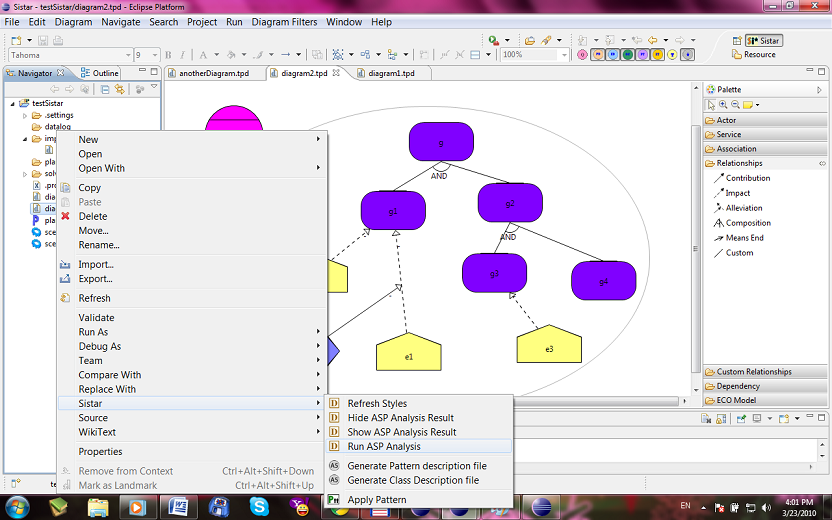

Diagram Action
Right click a diagram file and choose Sistar will show the diagram action.

- Run ASP Analysis: Run the ASP solver over the current diagram and show the results.
- Show ASP Analysis Result: Show the results of ASP analysis graphically
- Hide ASP Analysis Result: Hide the results of ASP analysis graphically
- Refresh Styles: Refresh diagram styles to the latest version, no longer required as it will auto refresh now